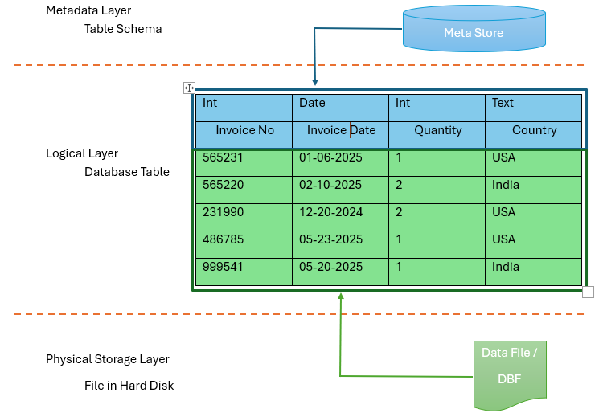
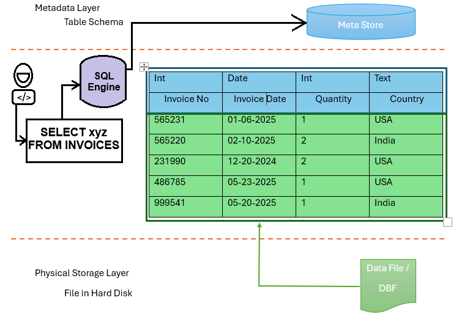
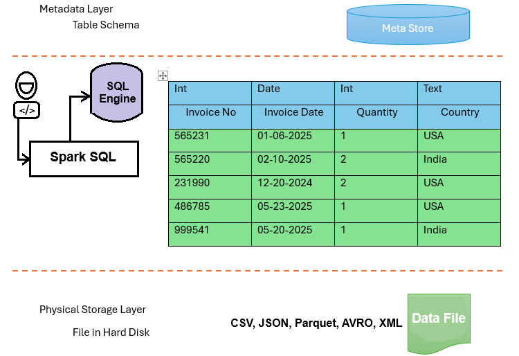
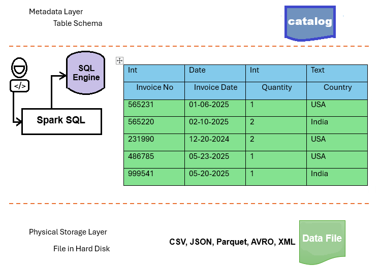

Spark is a data processing platform.
Databases are other data processing platform. Databases are the most popular and most widely used data processing platform which offers the following:
Tables
SQL
Before learning Spark Table and Spark Dataframe, lets study about typical database table.
We have 3 layers to form a table:
Storage Layer
Metadata Layer
Logical Layer

Storage Layer:
It stores the table data in a file.Database tables allows you to load the data in the table and this data internally stored as a DBF file. These DBF files are stored in the disk.
Metadata Layer:
It stores the table schema & other important information.
Logical Layer:
The logical layer presents you with a database table. You can execute sql query on the logical layer.
So basically, the table contains two things:
Table Schema - It is a list of column names and their data type. The schema information is stored in database data dictionary or a meta data store.
Table Data - It is the actual data which is stored in Data File separately in Physical storage layer (Hard disk).
How SQL executes
When you submit a SQL query to your database SQL Engine, the database will refer to the metadata store for parsing your SQL queries.

The database will throw a syntax error or an analysis error if you are using a column name in your SQL that does not exist in the metadata store.
The table data is stored in the dbf files behind the table, so if your SQL query is correct and passes all the schema validation, you will see query results.
The database will read data from the "dbf" file, process it according to your SQL query, and show you the results.
That is all about the data processing in databases. Now let's try database analogy with Apache Spark.
Apache Spark offers you two ways of data processing:
Spark Database Table and SQL
Spark Data frame and API
Let's read them ony by one
Spark Database and SQL
The first approach (Spark Database and SQL) precisely the same as a typical database except Spark table data is internally stored in the data files (not dbf files) in many formats such as CSV, JSON, Parquet, AVRO, XML, etc. and that is the reson spark supports structured, semi-structured, and unstructured data.
The DBF file format and database engine were designed to support structured data. But Spark is designed to support variety of file formats.

The spark sorage layer also supports distributed storage such as HDFS and clud storage (Amazon S3 and Azure ADLS). So you are not limited to disk storage capacity. You can use distributed storage and store large data files.
Spark also has a metdata layer which is similar to typical database table.
It is the same as the table without metadata store. What does it mean?
Spark Dataframe is structurally the same as the table. However, it does not store any schema information in the metadata store. Instead, we have a runtime metadata catalog to store the dataframe schema information.
The catalog is similar to the metadata store, but Spark will create it at the runtime to store schema information in the catalog. This catalog is only valid until your application is running. Spark will delete this catalog when your Spark application terminates.

What is the benefit of runtime catalog and not metadata store?
Well, we have two reasons for this.
Stark Dataframe is a runtime object and Spark Dataframe supports schema-on-read.
You can create a Spark Data frame at runtime and keep it in memory until your program terminates. Once your program terminates, your dataframe is gone. It is an in-memory object.
Spark tables are permanent. Once created, you will have a table forever. You can drop a table and remove it. But it remains in the system until you drop the table.
However, Spark Dataframe is a runtime and temporary object which lives in Spark memory and goes away when the application terminates. So the metadata is also stored in the temporary metadata catalog.
The second reason is due to the schema-on-read feature. Spark Dataframe is designed to support the idea of schema-on-read.
Dataframe does not have a fixed and predefined schema stored in the metadata store. Instead, we define the schema when we want to read the data from a file and load it into the Dataframe.
So the difference is straightforward.
We define a schema for the table when creating a table. Then we load data into the table. The data must comply with the table schema, or you will get an error.
However, Dataframe is different. We load the data into a Dataframe and tell the schema when loading the data. And Spark will read the file, apply the schema at the time of reading, create the Dataframe using the schema and load the data. So a Dataframe is always loaded with some data, whereas a Table can be empty.
That's all about Table vs. Dataframe.
You can use SQL on the table. However, Dataframe does not support SQL expressions.You must use Dataframe APIs to process data from a Dataframe.
Since the table and dataframe are structurally the same, you can convert them to each other. mean, you can convert a table into a dataframe and vice versa.
You have two ways of processing data in Spark:
SQL
Dataframe API
you can use both at your convenience.
1. Tables store schema information in the metadata store |
1. Dataframe stores schema information in runtime catalog |
2. Table and metadata stores are persistent objects and visible across applications |
2. Dataframe and Catalog are runtime objects and live only during the application runtime |
3. We create tables with a predefined table schema |
3. Dataframe supports schema-on-read |
4. Table supports SQL Expressions and does not support API |
4. Dataframe offers APIs and does not support SQL expressions |
A Spark table and a Dataframe are convertible objects.